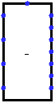

Decodificador para display de 7-Segmentos
Decodificador para display de 7-Segmentos
| Biblioteca: |
Plexers |
| Introdução: |
2.7.1.1 (Fork) |
| Aparência: |
 |
Comportamento
O componente tem quatro pinos de entrada na sua extremidade oeste,
cada entrada possui largura de 1 bit e a inferior é a mais significativa.
Essas quatro entradas receberão o valor em binário e então,
os setes pinos de saída correspondentes na extremidade leste
serão determinados para uso com o display de 7-segmentos.
Todas as entradas deverão estar conectadas.
Pinos (supondo o componente voltado para leste)
- Extremidade oeste (4 entradas, largura de bits igual a 1)
- Valores de entrada, endereçados a partir de A, o primeiro no topo/extremidade oeste,
até D, sendo essa a do bit mais significativo.
- Extremidade leste (7 saídas, largura de bits igual a 1)
-
Valores de saída, endereçados a partir de a, no topo/extremidade leste,
até g, correspondentes às letras do display de 7-segmentos.
- Extremidade norte (entrada, largura de bits igual a 1)
- Enable: 0 desbilita o componente.
Atributos
Quando o componente for selecionado ou estiver sendo incluído,
as setas poderão alterar o seu atributo Direção
.
- Direção
- A direção do componente (sua saída em relação à entrada).
- Multibit?
- Verdadeiro para uma �nica entrada multibit
Comportamento da ferramenta Testar
Nenhum.
Comportamento da ferramenta Texto
Nenhum.
Voltar à Referência para bibliotecas